Camino de Santiago
The old pilgrim way across northern Spain to Santiago de Compostela.
Camino de Santiago crosses Spain for 780 km and ends at Santiago de Compostela. The first landmark is Saint-Jean-Pied-de-Port. At 5,000 steps a day it's about 31 weeks of the walking you do anyway. All 42 landmarks are below, in walking order, with a photograph and the story of the place.
- 780km end to end
- 42landmarks
- 31 weeksat 5,000 steps a day
- Santiago de Compostelafinishes at

The landmarks of Camino de Santiago
42 landmarks, in walking order. Each photograph is by the person credited beneath it, used as they licensed it.
-
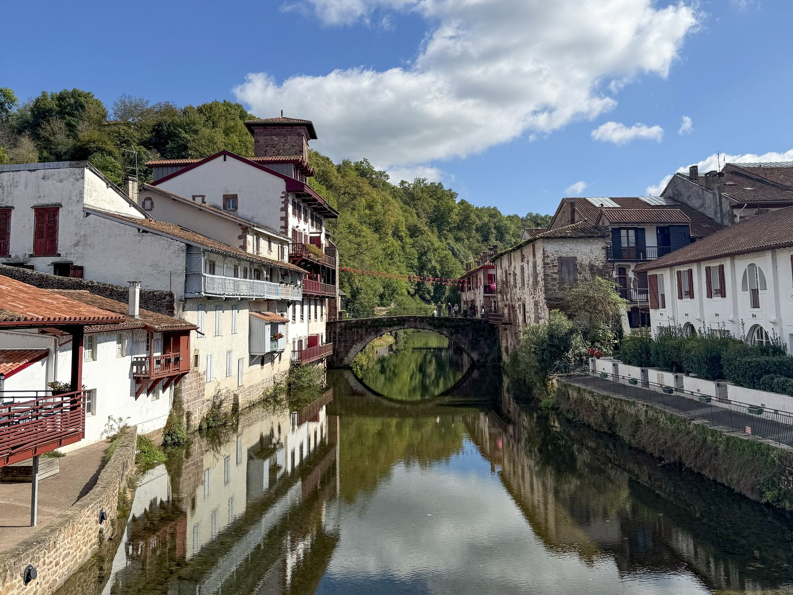
Photo: Hayden Soloviev · Wikimedia Commons, CC BY 4.0 Saint-Jean-Pied-de-Port
Cobbles line the Rue de la Citadelle in this Basque border town, and below it the river Nive slips beneath the old pilgrims' gate. Ahead rise the Pyrenees, and 780 kilometres of Spain running all the way to the tomb of Saint James. The Porte d'Espagne is where the Camino Francés begins.
-
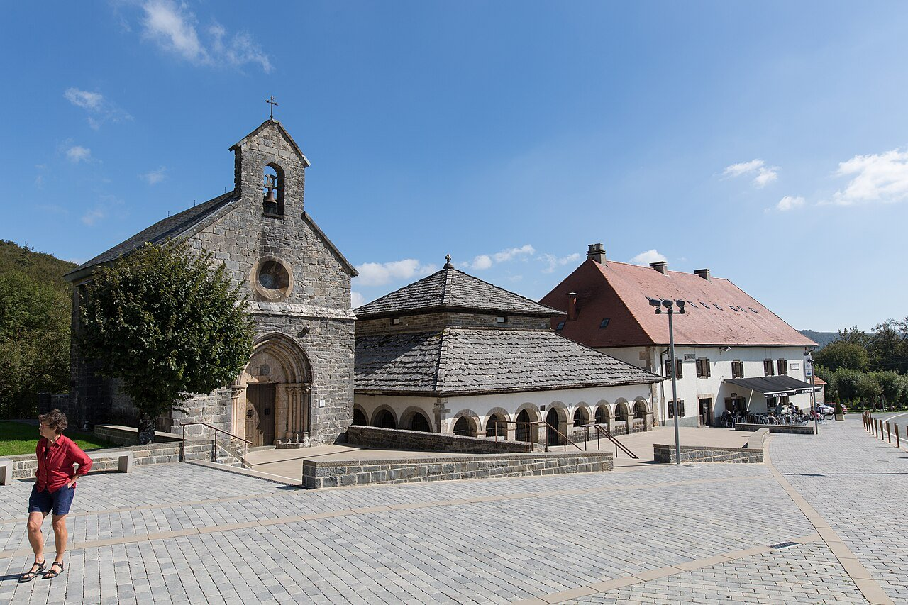
Photo: A1AA1A · Wikimedia Commons, CC BY-SA 4.0 Roncesvalles
Beech forest closes in as the high Route de Napoléon crosses the Pyrenees and drops to the great stone monastery of Roncesvalles, the first night in Spain. In this pass in 778, Charlemagne's rearguard was ambushed and the knight Roland fell, immortalised in the medieval Song of Roland. Its pilgrim hall has sheltered walkers for centuries.
-
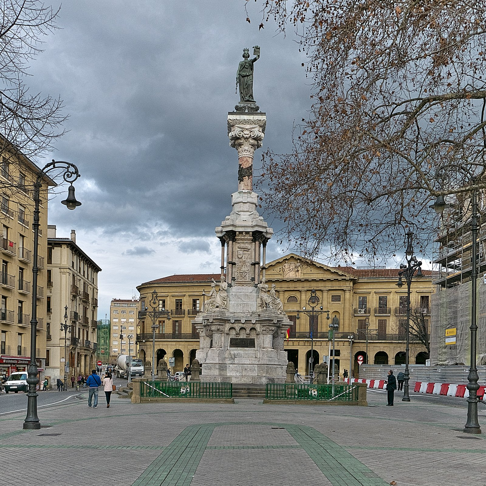
Photo: José Luis Filpo Cabana · Wikimedia Commons, CC BY-SA 4.0 Pamplona
Star-shaped ramparts guard the way into Pamplona, first great city of the Camino and capital of old Navarre. Each July its narrow streets host the running of the bulls that Hemingway made famous in The Sun Also Rises. Brass scallop shells set into the pavement lead past the Gothic cathedral and out the western gate.
-
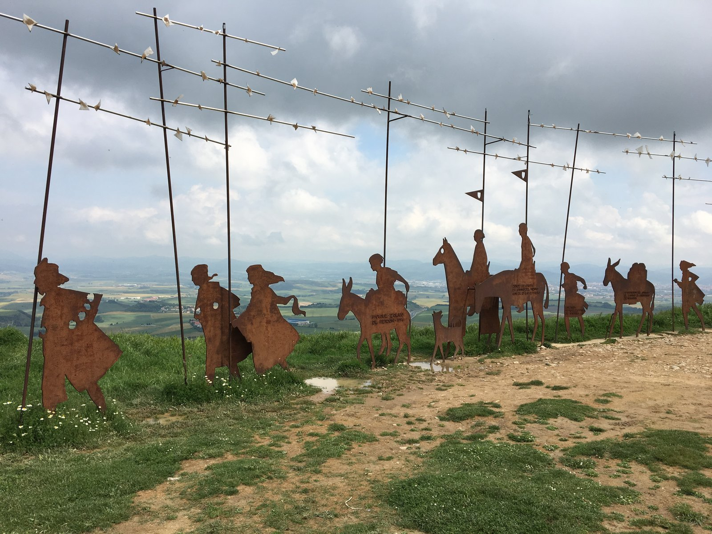
Photo: Birgitta Hellman Magnusson · Wikimedia Commons, CC BY-SA 4.0 Alto del Perdón
The wind never stops on the Alto del Perdón, the Hill of Forgiveness, where a line of rusted iron pilgrims leans into it beside the turbines. The inscription reads that here the way of the wind crosses the way of the stars. A steep rocky descent drops toward the vineyards of the Navarrese plain below.
-
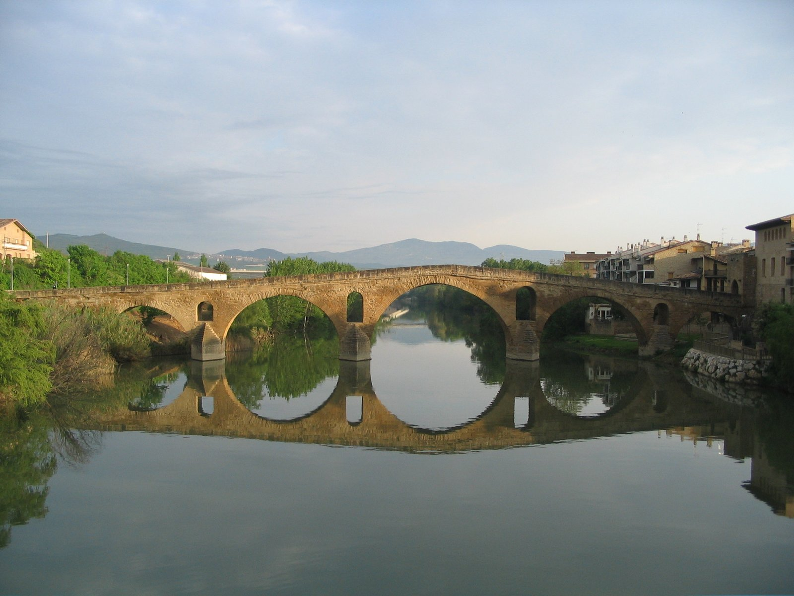
Photo: Piotr Tysarczyk · Wikimedia Commons, CC BY-SA 3.0 Puente la Reina
At Puente la Reina the routes from across France finally merge into one road to Santiago. Its elegant six-arched Romanesque bridge was built in the 11th century by a queen for the pilgrims who once forded the Arga here. From this stone span there is only one Camino, and it runs west.
-
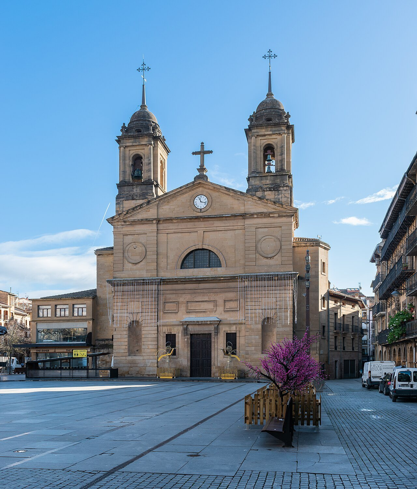
Photo: Krzysztof Golik · Wikimedia Commons, CC BY-SA 4.0 Estella
Estella spreads along the Ega, a town the medieval Codex Calixtinus praised for its good bread, wine and fish. The road climbs past the Romanesque palace of the Kings of Navarre and the church of San Pedro de la Rúa, its cloister carved with twisting columns. West of town the way climbs on toward the vineyards.
-
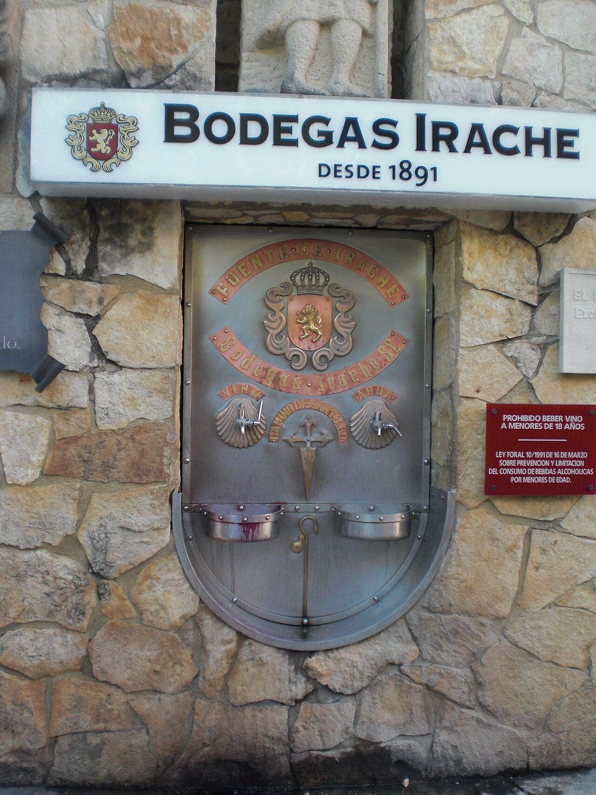
Photo: Mikelmikel10 · Wikimedia Commons, CC BY-SA 3.0 Bodegas Irache wine fountain
One tap runs red wine, the other water, both free for pilgrims since 1991: the Fuente del Vino, set into the wall of the Irache winery. A small sign asks that people drink with moderation so the tradition can continue. The old Benedictine monastery stands just beyond it.
-
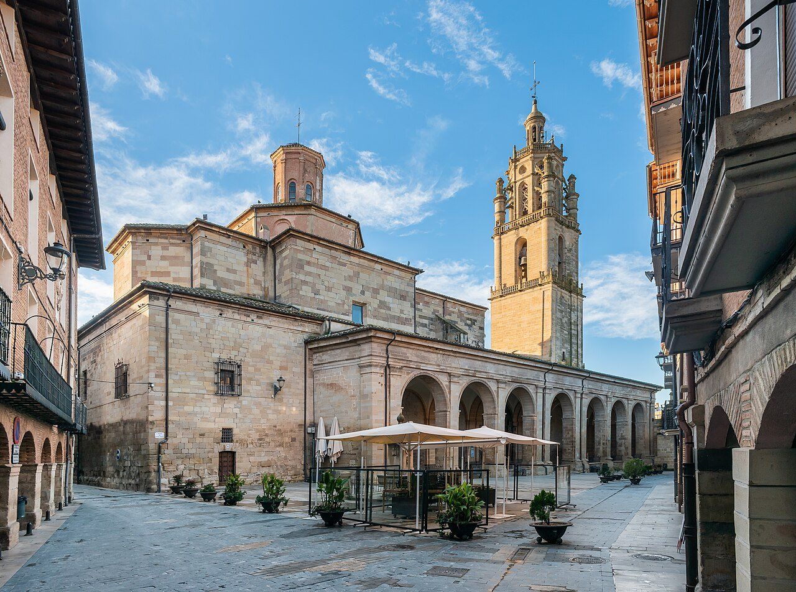
Photo: Krzysztof Golik · Wikimedia Commons, CC BY-SA 4.0 Los Arcos
A long stretch of open farmland with little shade runs into Los Arcos. Its reward is the church of Santa María, whose plain exterior hides an explosion of golden Baroque carving and a cloister that has survived the centuries. The Plaza de Santa María is a fine place to rest before the walk on toward Viana.
-
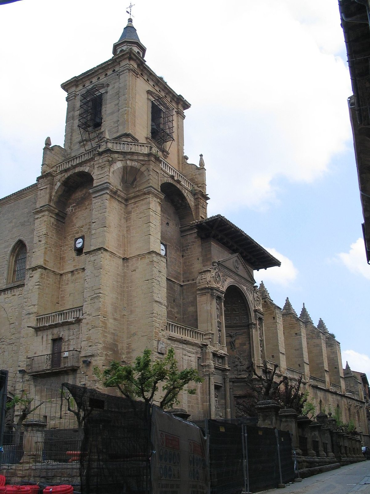
Photo: Pitert · Wikimedia Commons, CC BY-SA 3.0 Viana
Viana, the last town in Navarre, is ringed by the remains of its medieval walls. In front of the church of Santa María lies the tomb of Cesare Borgia, the Renaissance schemer who died fighting here in 1507. From the edge of town Logroño is already visible across the Ebro plain ahead.
-
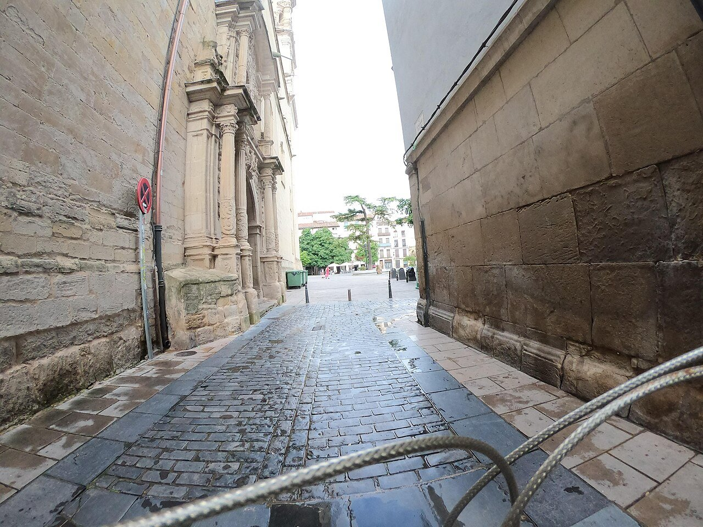
Photo: rubencarbonero · Wikimedia Commons, CC BY-SA 4.0 Logroño
A stone bridge over the river Ebro crosses into Logroño, capital of La Rioja and its sun-soaked vineyards. The tapas bars of Calle Laurel and the region's bodegas have fed and watered pilgrims for centuries. West of the city the Camino runs on through rolling wine country.
-
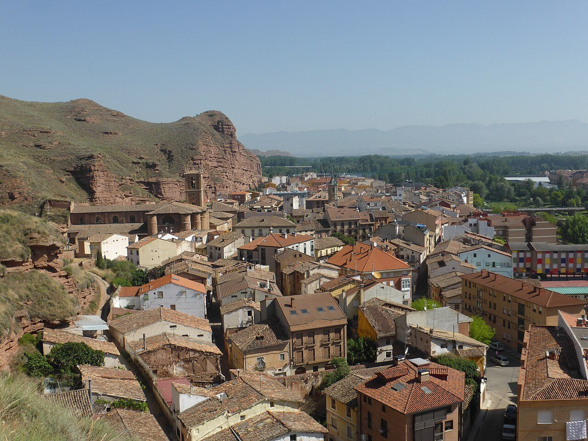
Photo: CARLOS TEIXIDOR CADENAS · Wikimedia Commons, CC BY-SA 4.0 Nájera
Nájera presses against rust-red sandstone cliffs across the Najerilla. Cut into the rock is the monastery of Santa María la Real, with its royal pantheon of Navarrese kings and a cave where, legend says, a hunting hawk led King García to a hidden image of the Virgin. The climb toward Santo Domingo begins beyond the town.
-
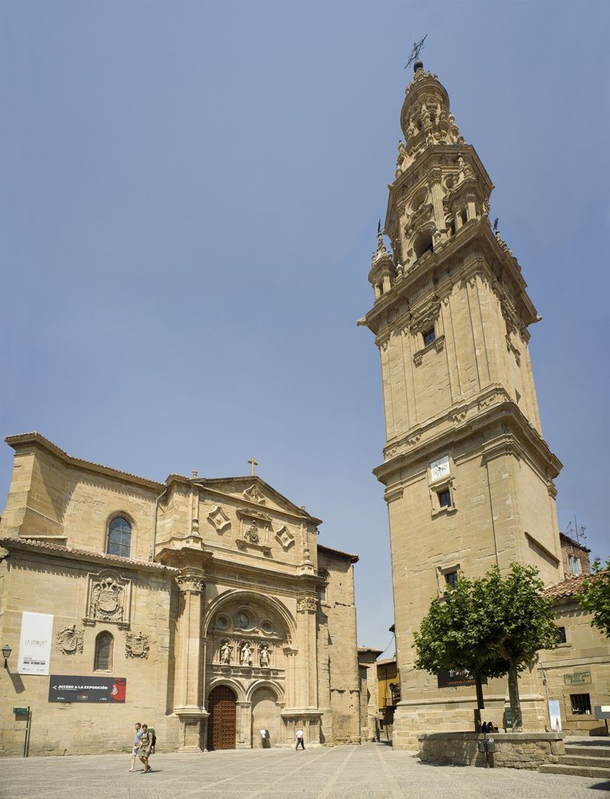
Photo: PMRMaeyaert · Wikimedia Commons, CC BY-SA 3.0 Santo Domingo de la Calzada
The town is named for Domingo, the 11th-century hermit who built roads, bridges and a pilgrim hospital to ease the way to Santiago. Inside the cathedral a live hen and rooster are still kept in a gilded coop, recalling the miracle of a hanged pilgrim restored to life. A freestanding bell tower rises before the road runs on to Belorado.
-
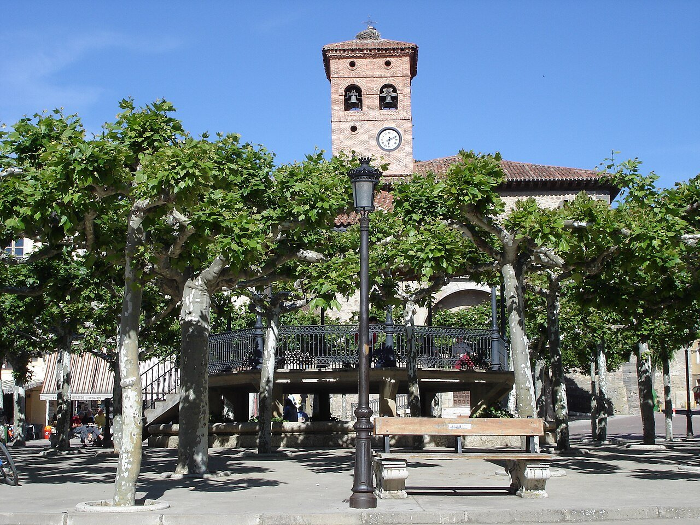
Photo: HJ.Weinz · Wikimedia Commons, CC BY-SA 3.0 Belorado
Belorado is an old frontier town whose hillside is honeycombed with caves once used by hermits and later lived in as homes. The arcaded Plaza Mayor still gathers the town in its shade, and the cliff above the church of Santa María is dotted with the dark mouths of those old dwellings. The climb into the Montes de Oca begins from here.
-
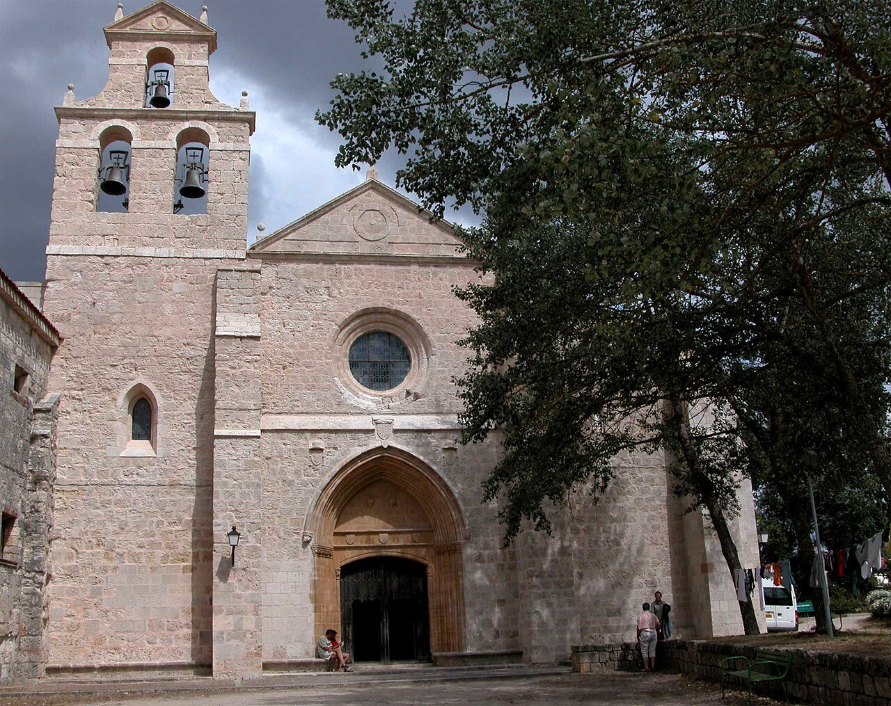
Photo: Pigmentoazul · Wikimedia Commons, CC BY-SA 3.0 San Juan de Ortega
The lonely hamlet of San Juan de Ortega takes its name from a disciple of Santo Domingo, who tamed the bandit-ridden oak woods of the Montes de Oca. Twice a year, at the equinoxes, a shaft of late sun strikes a carved capital inside the church and lights up the Annunciation, a miracle of the light built into the stone. The quiet here runs deep before the last climb to Atapuerca.
-
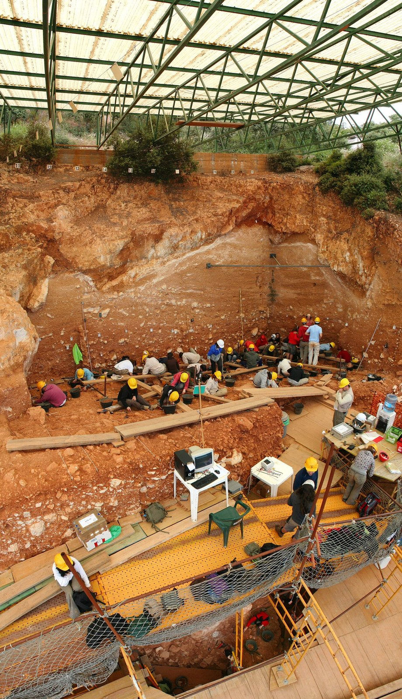
Photo: Mario Modesto Mata · Wikimedia Commons, CC BY-SA 3.0 Atapuerca
Near Atapuerca, cave digs have yielded some of the oldest human remains in Europe, going back nearly a million years. A cross marks the high point of the ridge above the village, with the city of Burgos spread out on the plain to the west. From this windswept rise it is downhill into the Castilian capital.
-
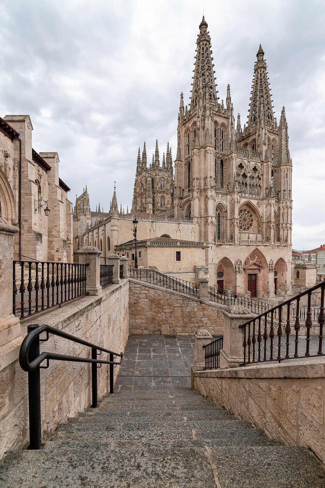
Photo: José Ligero Loarte · Wikimedia Commons, CC BY-SA 4.0 Burgos
Once the capital of Castile, Burgos raises the spires of its Gothic cathedral high over the Arlanzón river. A UNESCO World Heritage masterpiece, it holds the tomb of El Cid, the legendary medieval warrior. Beyond its lacework stone begin the wide, lonely plains of the Meseta.
-
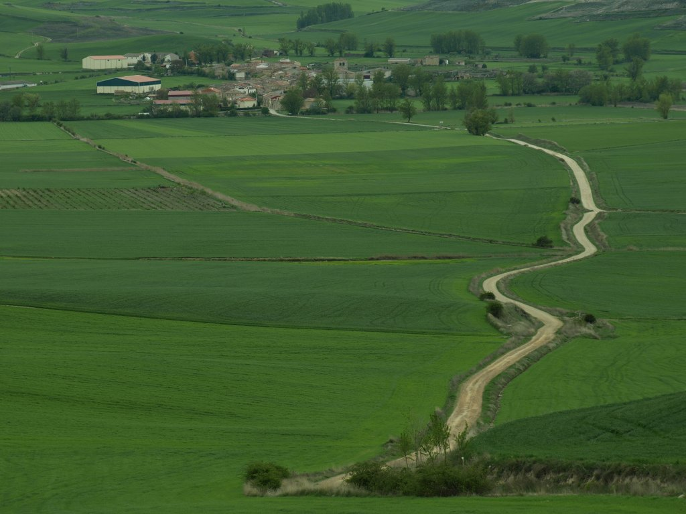
Photo: aherrero · Wikimedia Commons, CC BY 2.0 Hornillos del Camino
A single long street of golden stone, folded into a hollow on the high meseta, makes up Hornillos del Camino. The slender church of San Román rises over a village that has lived on pilgrims for a thousand years. The open tableland beyond offers little shelter and no water.
-
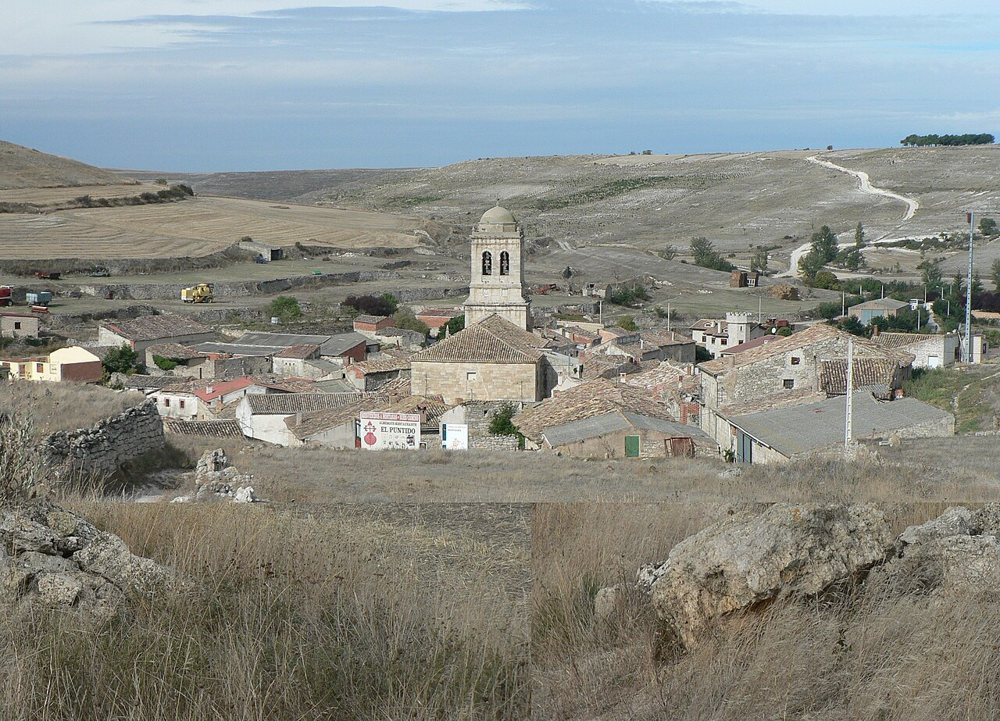
Photo: ElCaminodeSantiago092006 · Wikimedia Commons, CC BY-SA 2.0 Hontanas
Nothing shows until the very last moment, when Hontanas appears in a fold of the meseta, its church tower rising at the lip of the valley. The name means 'springs', and its fountains have refreshed pilgrims crossing this dry plateau for centuries. A ruined convent stands on the way beyond.
-
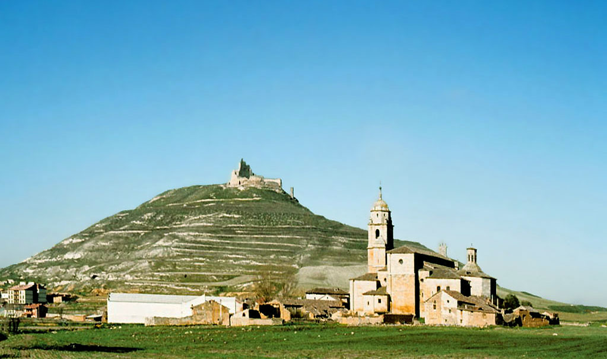
Photo: LBM1948 · Wikimedia Commons, CC BY-SA 4.0 Castrojeriz
The path runs straight beneath the high arches of San Antón, a ruined convent, before reaching Castrojeriz, strung along the base of a conical hill crowned by a castle ruin. The town curls for more than a kilometre around the slope below the old fortress. The steep Alto de Mostelares rises beyond the collegiate church.
-
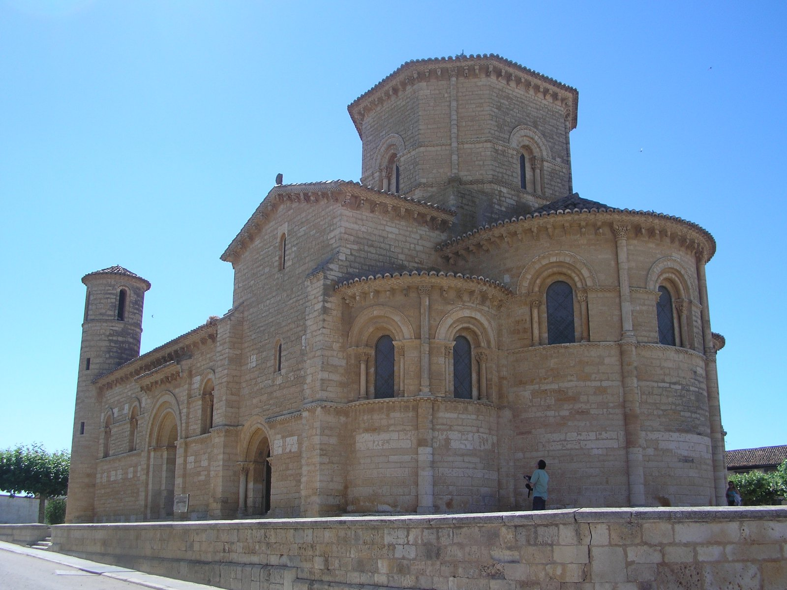
Photo: Santiperez · Wikimedia Commons, CC BY-SA 3.0 Frómista
Frómista holds San Martín, one of the purest Romanesque churches in Spain, its honey-coloured walls ringed by hundreds of carved corbels of beasts and faces. The building was rescued and restored stone by stone a century ago. Beyond the town the path joins the long straight senda beside the Canal de Castilla.
-
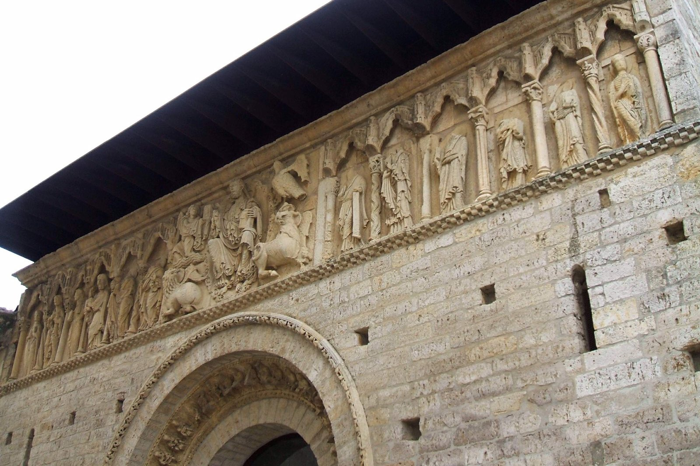
Photo: Zarateman · Wikimedia Commons, CC0 Carrión de los Condes
Carrión de los Condes was once a powerful medieval town of a dozen monasteries, with a dark legend of a yearly tribute of maidens broken by a charge of wild bulls. The church of Santa María del Camino still carries that tale on its carved facade. The long Roman road ahead has no village for seventeen kilometres.
-
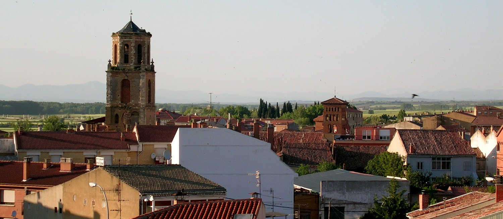
Photo: Christian González · Wikimedia Commons, CC BY-SA 2.0 Sahagún
Sahagún was once home to the most powerful monastery in all of Spain, now mostly vanished. What survives is remarkable: the brick churches of San Tirso and San Lorenzo, early masterpieces of Mudéjar building that blend Christian and Moorish craft. The town marks roughly the midpoint of the whole French Way.
-
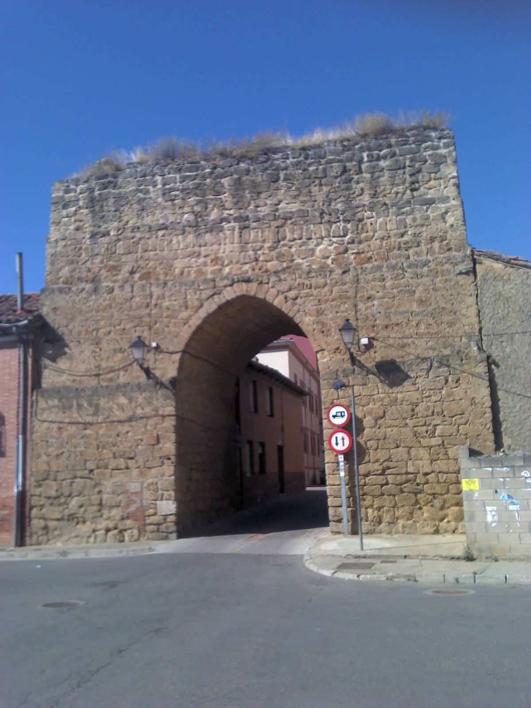
Photo: Miguel Angel Pescador Santirso · Wikimedia Commons, CC BY-SA 3.0 Mansilla de las Mulas
A gap in the surviving medieval walls opens into Mansilla de las Mulas, its thick ramparts of cobble and brick still ringing much of the old town. The name recalls the mule markets once held here on the banks of the Esla. Across the river bridge lies the last easy day into León.
-
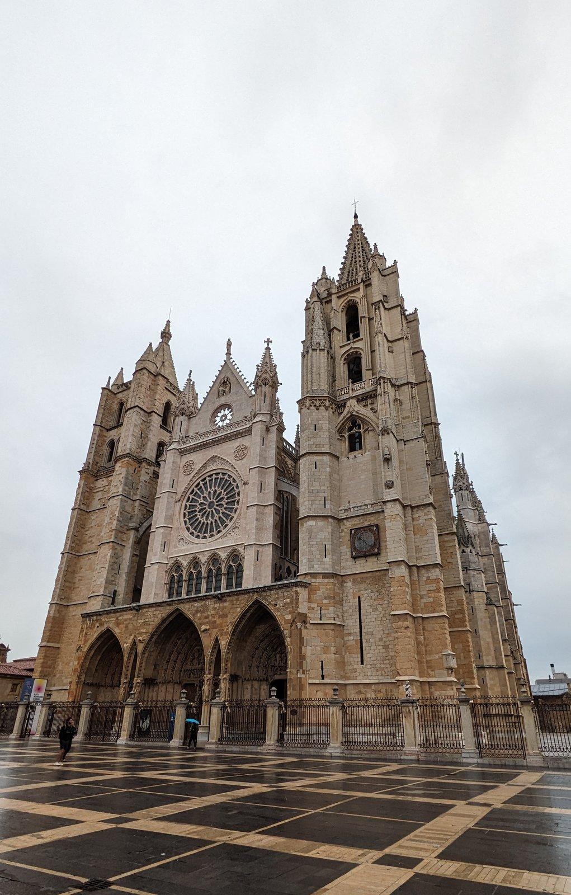
Photo: PEPE GADEIRAS · Wikimedia Commons, CC BY 4.0 León
Beyond the high Meseta stands León, its cathedral aglow with some of the finest stained glass in Europe, nearly two thousand square metres of coloured light. The city's Roman walls and the Gaudí-designed Casa Botines mark it as one of the Camino's great prizes. It sits past the halfway mark, with Galicia still to come.
-
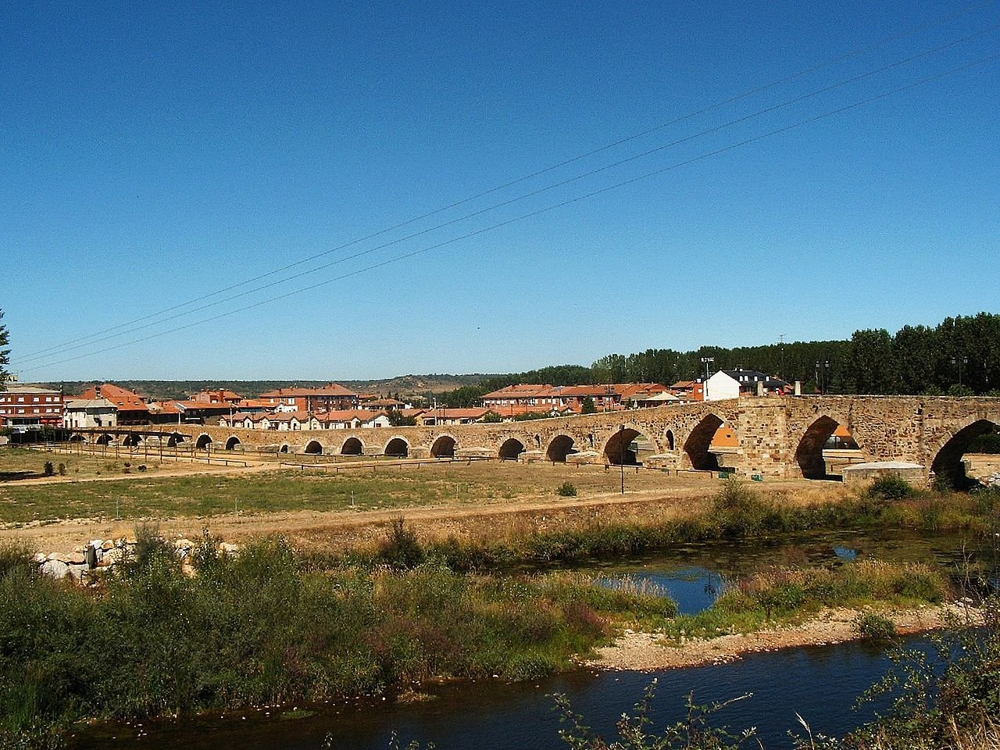
Photo: Jule_Berlin from Berlin, Germany · Wikimedia Commons, CC BY 2.0 Hospital de Órbigo
Twenty arches carry the Puente del Paso Honroso across the Órbigo, one of the longest and oldest bridges on the whole Camino. Here in 1434 the knight Suero de Quiñones held the bridge against all comers for a month to win release from a vow of love. Its long stone span runs on toward Astorga.
-
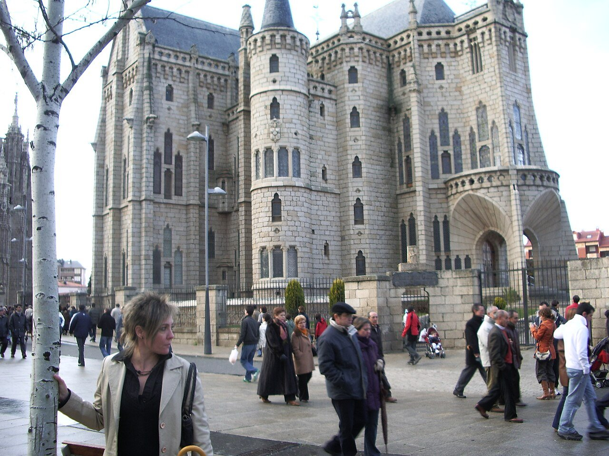
Photo: carlos corzo · Wikimedia Commons, CC BY-SA 3.0 Astorga
Astorga is an ancient Roman crossroads town ringed by old walls, where Antoni Gaudí built a fairytale Episcopal Palace of pale granite turrets. Beyond it begins the wild Maragato hill country, and the region's chocolate is worth seeking out. The climb into the mountains starts from here.
-
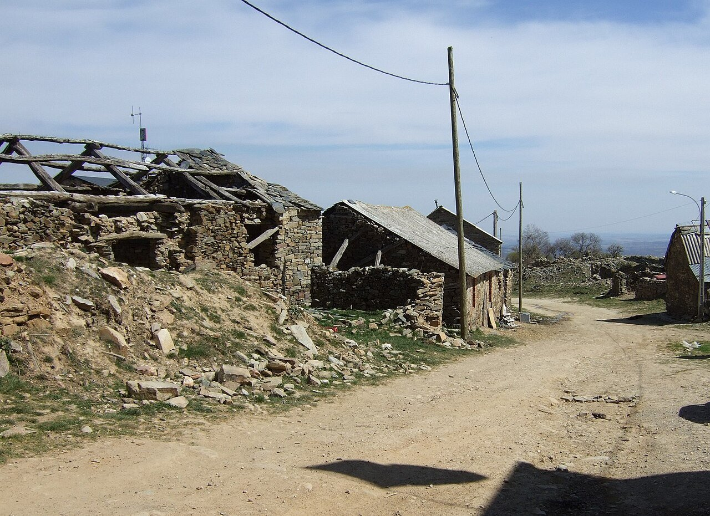
Photo: Benutzer:Marathoni62 · Wikimedia Commons, Public domain Foncebadón
Tumbledown stone and half-ruined houses: Foncebadón is a near-abandoned mountain hamlet that pilgrims have slowly brought back to life. At over fourteen hundred metres the wind is sharp and the views over the Maragatería run open and wild. The iron cross at the top of the pass stands only a short climb beyond.
-
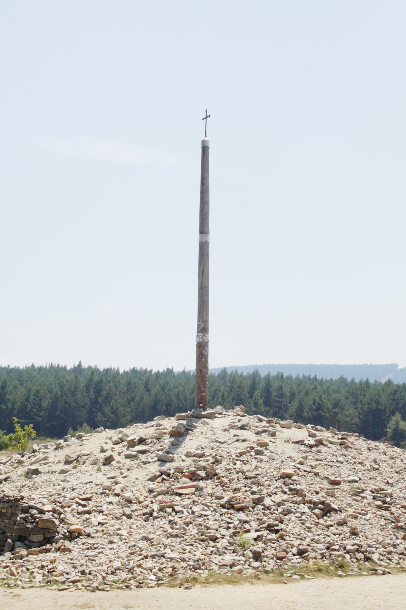
Photo: Random username 083794703875938 · Wikimedia Commons, CC0 Cruz de Ferro
A simple iron cross on a tall oak pole marks the Cruz de Ferro at 1,504 metres, the highest point of the whole Camino Francés. For centuries pilgrims have laid a stone carried from home at its base, leaving behind a burden. From here the Camino makes its long descent into the green west.
-
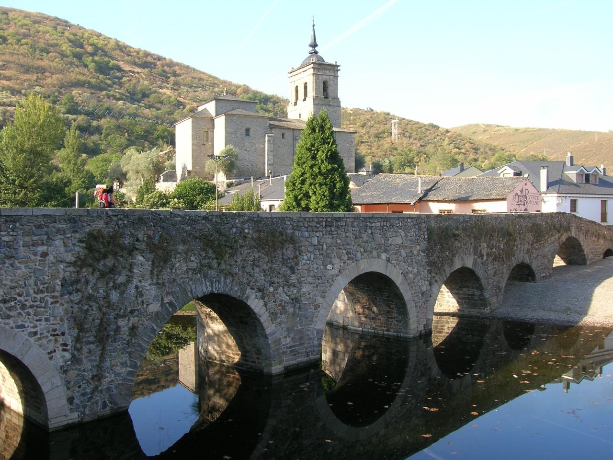
Photo: José Antonio Gil Martínez from Vigo, Spain · Wikimedia Commons, CC BY 2.0 Molinaseca
The mountain drops steeply into Molinaseca, where a graceful medieval bridge carries the path over the clear Meruelo. In summer, pilgrims wade into the river pools below the arches to cool their feet. Slate-roofed houses and a shrine to the Virgin at the entrance make this one of the prettiest arrivals on the route, with Ponferrada just ahead.
-
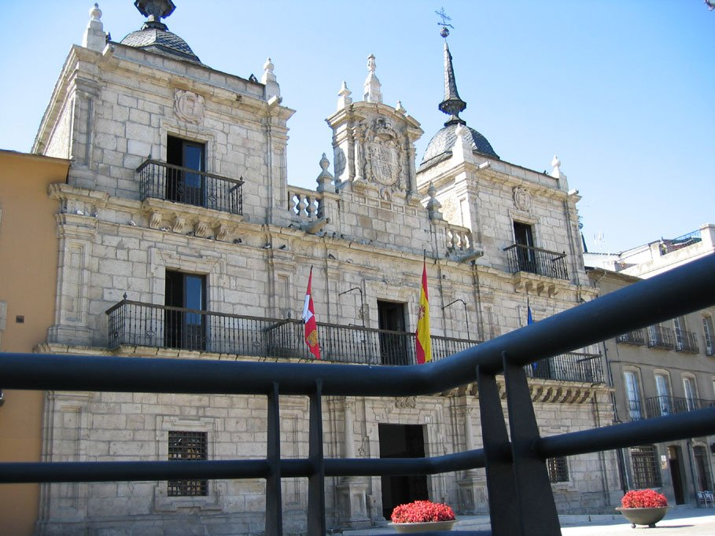
Photo: Bolado · Wikimedia Commons, CC BY-SA 2.5 Ponferrada
The great Templar castle of Ponferrada raises its battlements and towers where warrior monks once guarded pilgrims crossing into the Bierzo. The town takes its name from an iron-reinforced bridge built for the Camino in the 11th century. Beyond the walls the path leads out among the vineyards of this warm green valley.
-
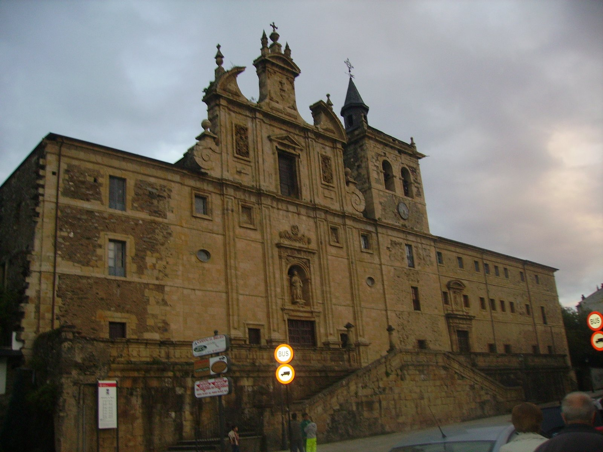
Photo: FCPB · Wikimedia Commons, CC BY-SA 4.0 Villafranca del Bierzo
At Villafranca del Bierzo, the church of Santiago has a Puerta del Perdón that once granted sick pilgrims who could go no further the same indulgence as reaching Santiago itself. The town sits where two rivers meet below steep wooded hills. The long hard climb to O Cebreiro and Galicia begins beyond it.
-
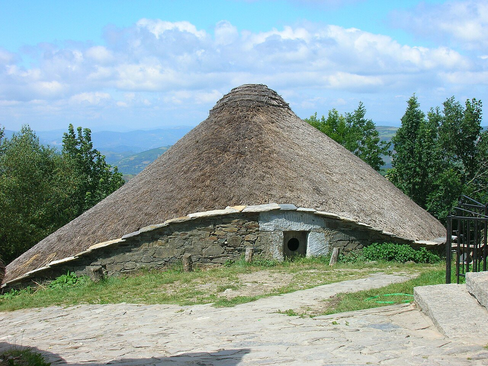
Photo: SanchoPanzaXXI · Wikimedia Commons, CC BY-SA 3.0 O Cebreiro
A steep mountain climb into Galicia ends at O Cebreiro, a misty stone village of round Celtic pallozas thatched with rye. Its little pre-Romanesque church guards a holy grail legend and the relics of a medieval eucharistic miracle. From this windy ridge the cool green hills of Galicia roll all the way to Santiago.
-
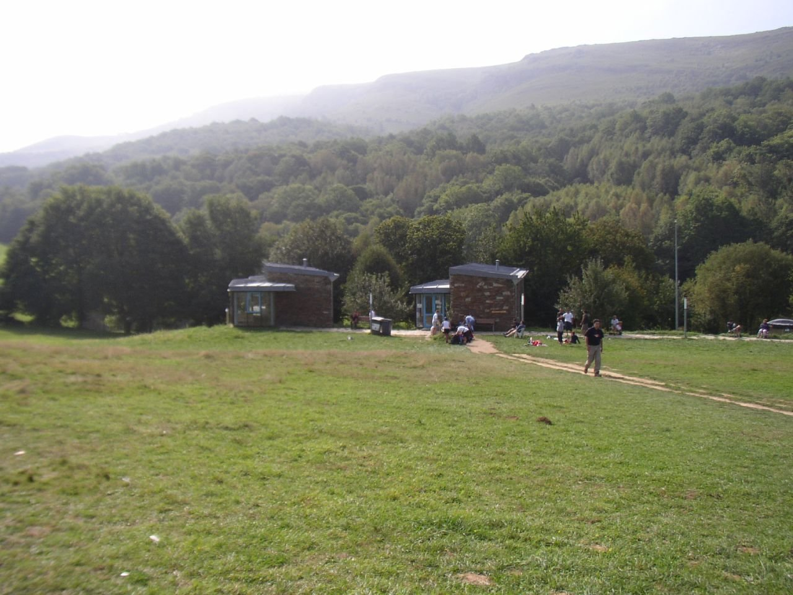
Photo: Jose Antonio Gil Martínez. FREECAT from Vigo · Wikimedia Commons, CC BY 2.0 Triacastela
Triacastela's name speaks of three castles, all long gone, and the high Galician ridges fall away toward it. For centuries pilgrims here picked up a block of local limestone to carry toward the kilns of Castañeda, helping to build the cathedral at Santiago. Two roads lead on from here, the high route or the valley path past Samos.
-
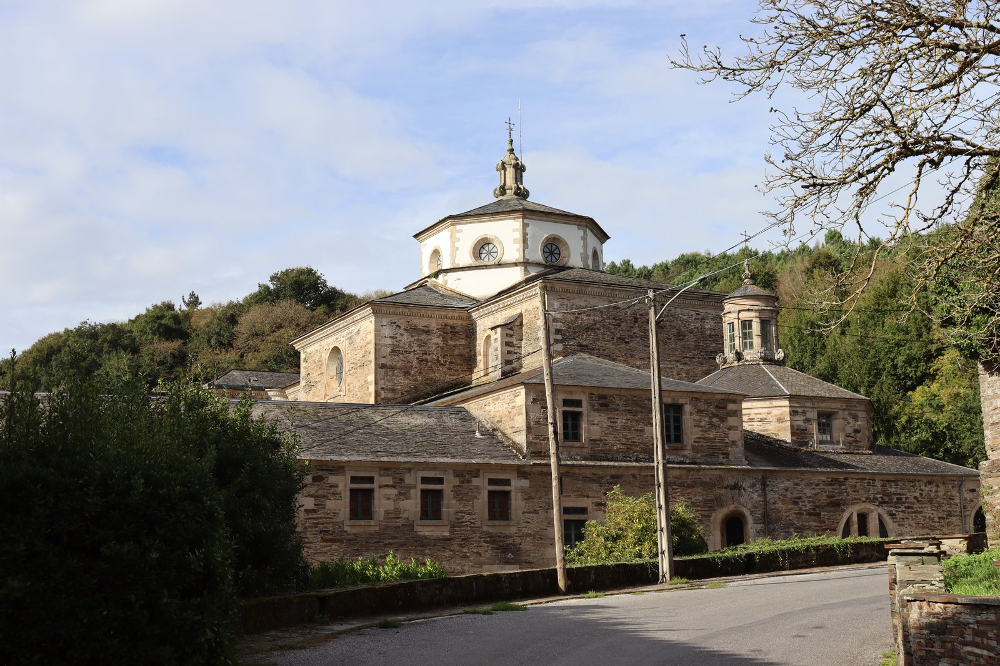
Photo: Fernando Losada Rodríguez · Wikimedia Commons, CC BY-SA 4.0 Samos
The river valley leads to the vast Benedictine monastery of Samos, one of the oldest and largest in Spain, its great walls rising straight from the village street. Monks have lived and prayed here since the 6th century, and two cloisters and a frescoed gallery survive within. The quiet of the valley runs on toward Sarria.
-
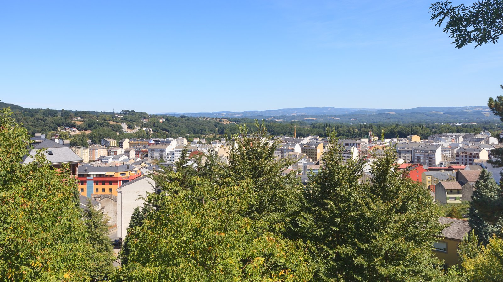
Photo: Luis Miguel Bugallo Sánchez (Lmbuga) · Wikimedia Commons, CC BY-SA 4.0 Sarria
Sarria is the busiest starting point of all, sitting just over 100 kilometres from Santiago, the minimum distance to earn the Compostela certificate. The path now fills with new pilgrims, and the granite waymarkers count down the final kilometres. Through eucalyptus woods and old hamlets, the goal draws close.
-
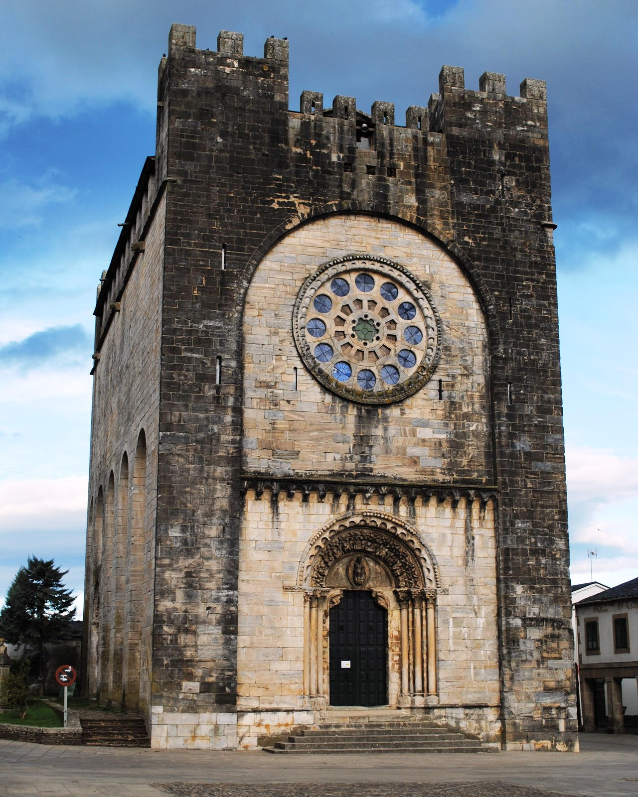
Photo: HombreDHojalata · Wikimedia Commons, CC BY-SA 3.0 Portomarín
A long bridge over the Belesar reservoir crosses into Portomarín, a town moved uphill stone by stone in the 1960s before the old village drowned beneath the dammed Miño. Its fortress-like church of San Nicolás was numbered and rebuilt block by block on the new hill. When the water is low, the ghost of the old bridge still rises from the river below.
-
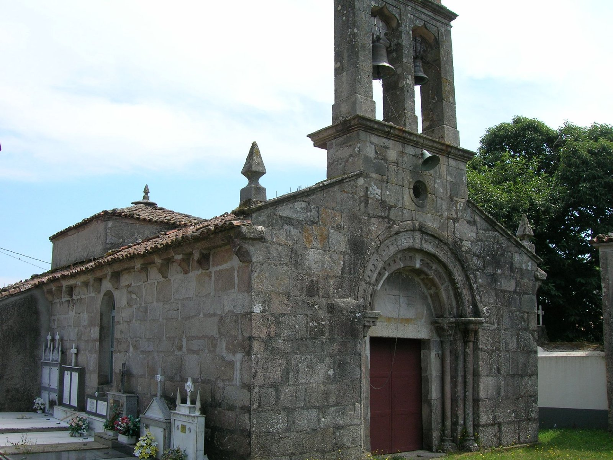
Photo: José Antonio Gil Martínez · Wikimedia Commons, CC BY 2.0 Palas de Rei
Palas de Rei takes its name from a long-lost palace of the Visigothic kings. For many pilgrims it marks the start of the last full day's walk into Santiago, and the path grows busier with company. Eucalyptus and oak woods give way to rolling green miles toward Melide.
-
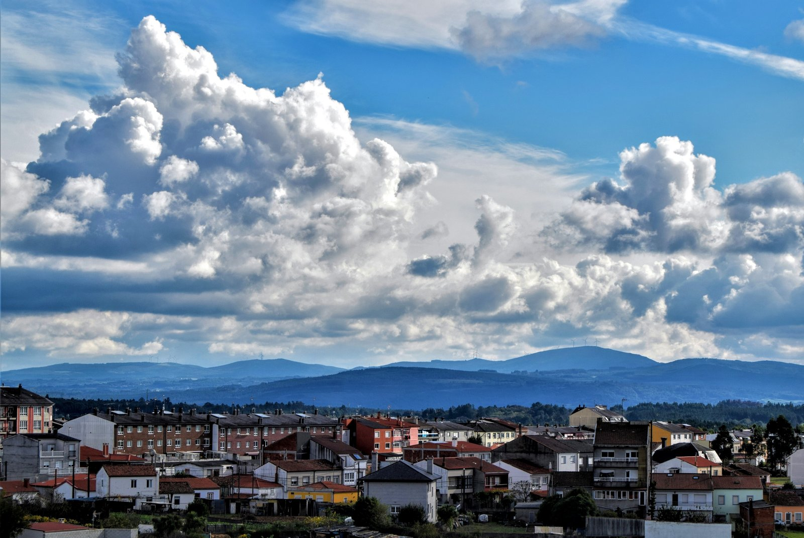
Photo: Mike Abrants · Wikimedia Commons, CC BY 2.5 Melide
At Melide, the geographic heart of Galicia, the old Camino Primitivo from Oviedo joins the French Way. The town is famous for pulpo a feira, octopus boiled in copper cauldrons and served on wooden plates with paprika and oil. Its pulperías are the traditional place on the route to eat it.
-
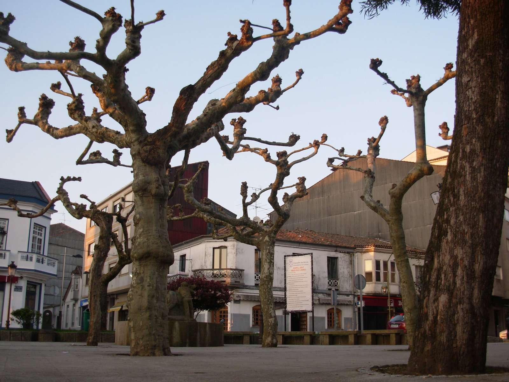
Photo: Cynthia · Wikimedia Commons, CC BY-SA 2.0 Arzúa
Eucalyptus woods scent the air on the way into Arzúa, a town known across Spain for its soft creamy cheese, the cone-shaped queixo de Arzúa, sold in shops along the main street. Only the final day's walk now separates the town from Santiago.
-
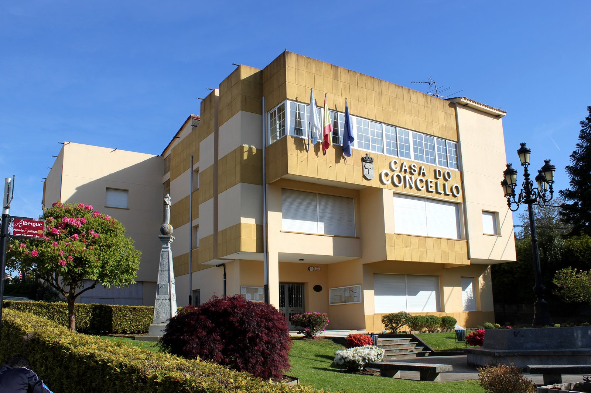
Photo: Bene Riobó · Wikimedia Commons, CC BY-SA 4.0 O Pedrouzo
O Pedrouzo is the last common stop before Santiago, a workaday village strung along the road and full of pilgrims taking their final night's rest. The surrounding woods are dense and green, and the next day's path passes close by the airport before the long-awaited city. The cathedral now lies within a single day's reach.
-
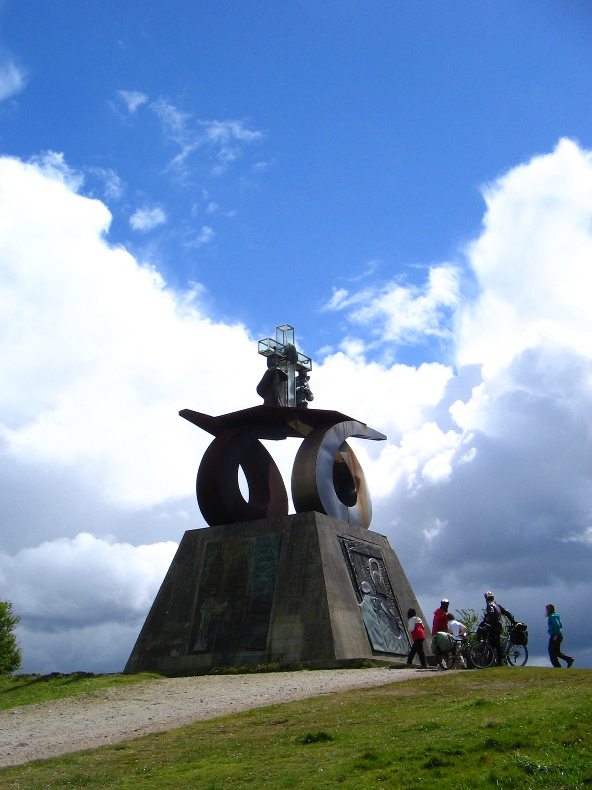
Photo: Antoine Cadotte · Wikimedia Commons, CC BY-SA 3.0 Monte do Gozo
The Monte do Gozo, the Mount of Joy, is the low hill from which medieval pilgrims first glimpsed the cathedral spires and wept and cheered. A modern monument and the distant towers of Santiago crown the climb. Only five downhill kilometres remain between the hill and the great square before the cathedral.
-
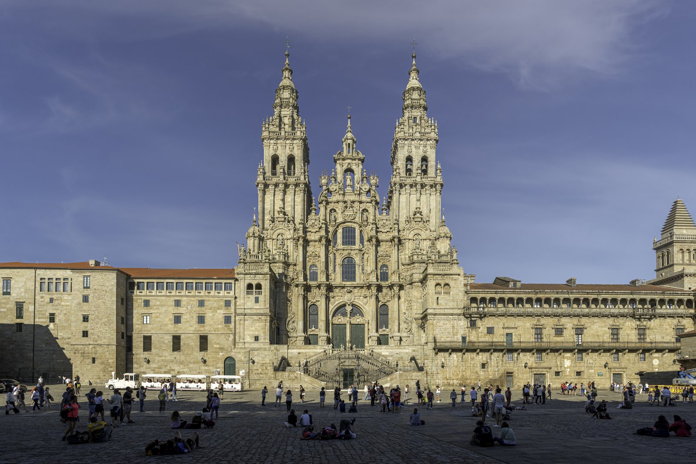
Photo: Fernando Pascullo · Wikimedia Commons, CC BY-SA 4.0 Santiago de Compostela
The Praza do Obradoiro opens wide, and there stands the great baroque facade of the Cathedral of Santiago de Compostela, 780 kilometres of France and Spain unwound behind it. Beneath the high altar lie the relics of the apostle Saint James, the goal of pilgrims since the ninth century. Pyrenean passes, the endless Meseta and the green hills of Galicia all end here, at the close of the Camino Francés.
Walking the Camino de Santiago
Your watch is already counting these steps. Watch Walks spends them on the Camino de Santiago, all 780 km of it, and hands you each landmark as you reach it. There's no route recording, no account and no ads. The Inca Trail is free; this one is a one-time purchase with no subscription.
Other trails in Europe
- Length of Britain 1,745 km · United Kingdom
- GR20 180 km · Corsica (France)
- Tour du Mont Blanc 170 km · France/Italy/Switzerland
- West Highland Way 154 km · Scotland
- Walker's Haute Route 180 km · France / Switzerland
- Kungsleden (The King's Trail) 440 km · Sweden